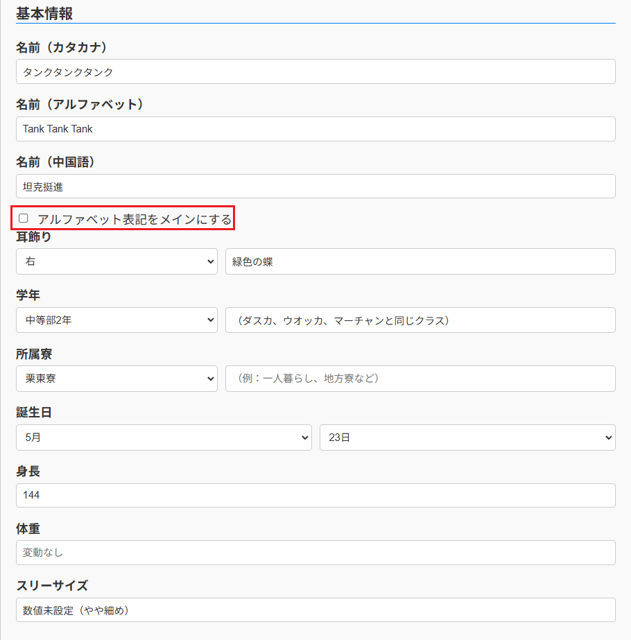
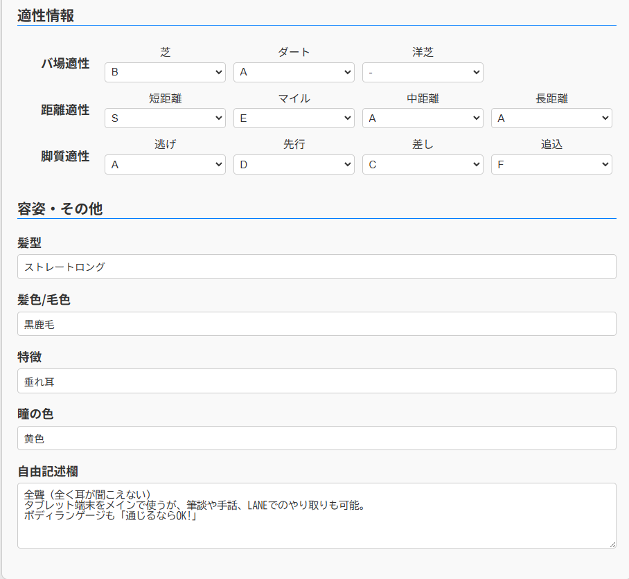
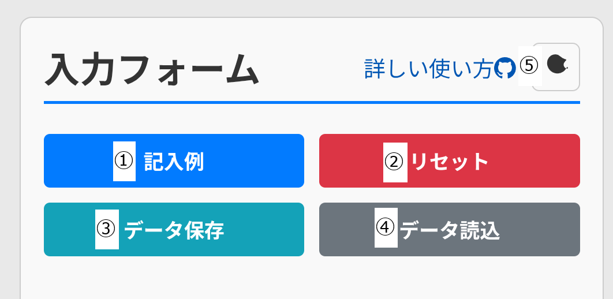
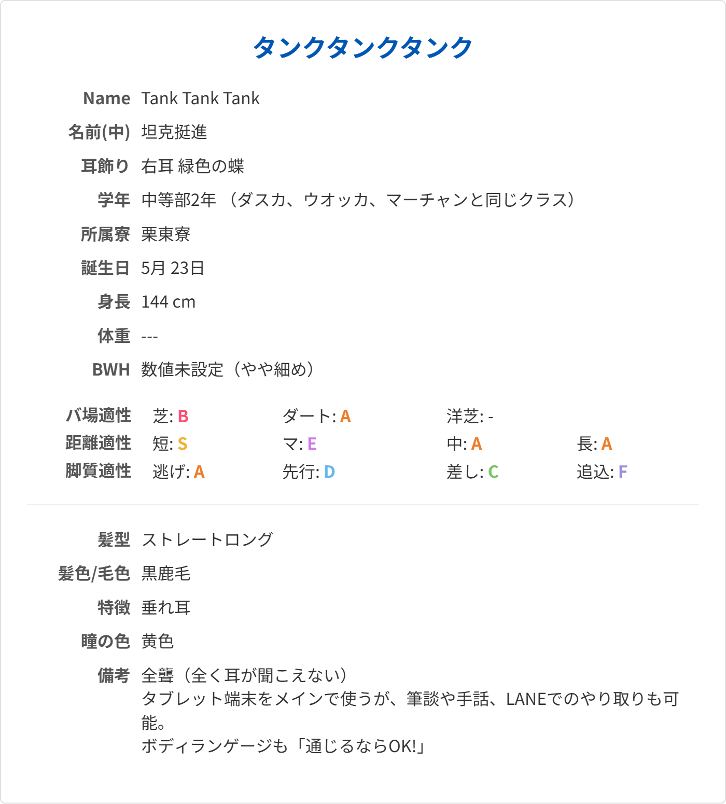
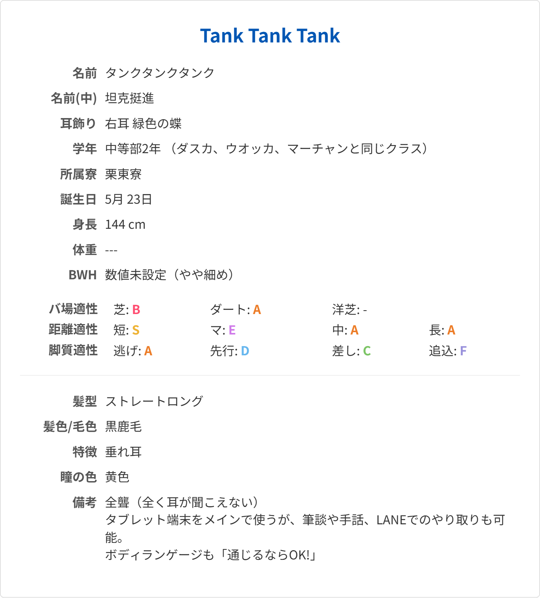
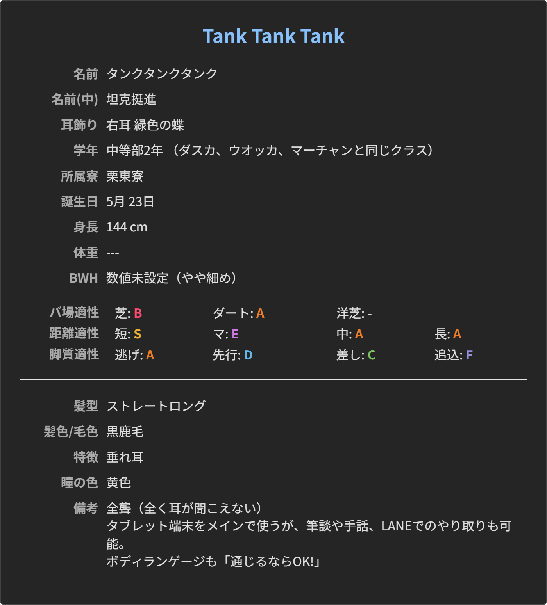

オリウマ用キャラシート作成機 の使い方
このページでは、「オリウマ用キャラシート作成機」の基本的な使い方と、各機能の詳細について解説します。
基本的な使い方
まずは、基本的な使い方をステップごとに見ていきましょう。
各機能の詳細
入力できる情報

- 名前（カタカナ、アルファベット、中国語）
通常はカタカナ名がトップに表示されます。海外バ向けとして、欧字名を優先表示に切り替えることができます。 - 耳飾り（「右、左、両、なし」＋「自由入力」）
- 学年（「中等部、高等部」など＋自由入力）
飛び級などの特殊設定がある場合、プルダウンで（空欄）を選ぶと自由記述欄の内容が左詰めになります。 - 所属寮（「美浦、栗東、（空欄）」＋「自由入力」）
マルゼンスキーのような「一人暮らし」などは（空欄）を選んで自由記述のみで入力してください。 - 誕生日（月＋日）
- 身長（数字のみ入力、空欄でなければ自動で「cm」を追加して表示します）
- 体重（自由入力）
- スリーサイズ（自由入力。「ちょっと細め」とか書いても大丈夫です）

- 各種適性（S-G、未設定）
- 髪型
- 髪色/毛色
- 特徴（流星などの外見上の特徴を想定）
- 瞳の色
- 自由記述欄（改行可能）
各種ボタンの説明

- 記入例
入力済の内容を破棄して、入力例のデータに置き換えます。 - リセット
入力済の内容を破棄して、すべての入力欄を未入力の状態に戻します。 - データ保存
現在入力されている情報をJSONファイルとして保存します。ファイル名はデフォルトでカタカナ名が使用されます。 - データ読み込み
このツールで作成したJSONファイルを読み込む事ができます。 - テーマ切り替えボタン
ダーク/ライトテーマを切り替えられます。

- 画像として保存
プレビューを横1400px固定のpngファイルで保存します。ダークテーマ表示中は、保存時の配色を選択できます。
作成例
ライトテーマ

欧字名優先設定時

ダークテーマ
